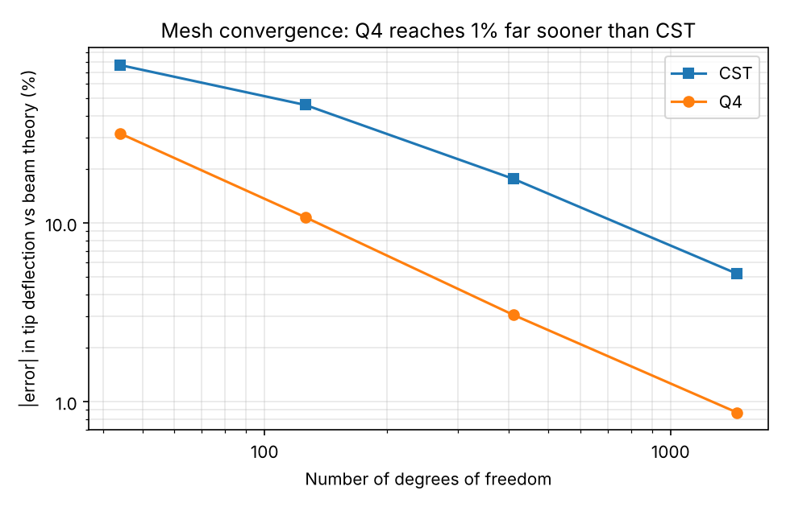
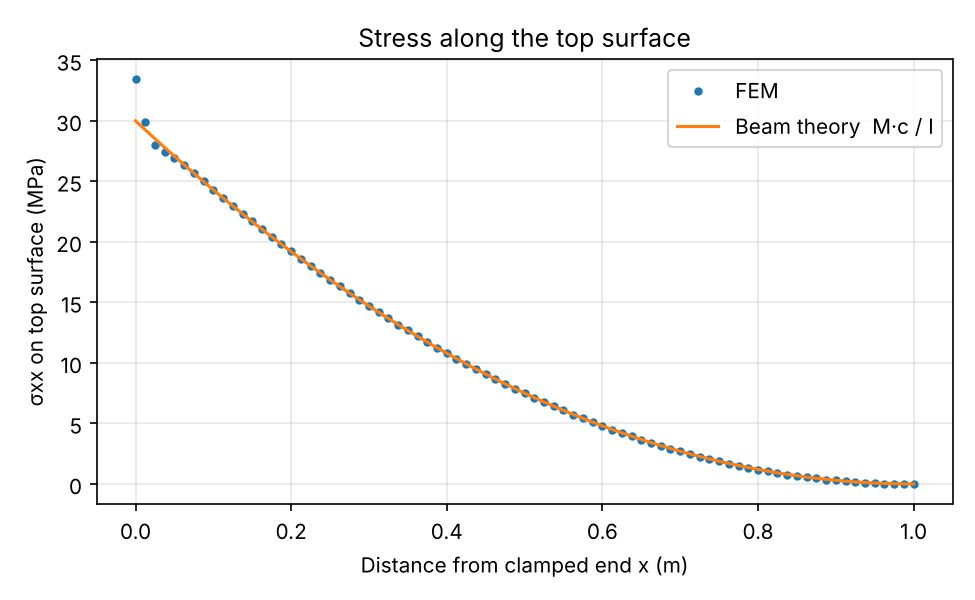

1. Problem formulation
A rectangular bar of length L, height h and thickness t is clamped on its left edge. A uniform pressure p either pushes down on its top face (bending) or pulls on its right end (tension). Assuming small strains, linear elasticity and plane stress, the finite element method finds the stress and strain everywhere in the bar. The results are checked against beam theory, and the peak stress is compared with the material's yield strength.
2. Interactive solver
First visit: Python, NumPy and Matplotlib load into your browser (about 15–30 s). After that each solve takes about a second.
3. Method
Weak form. Equilibrium ∇·σ = 0 is multiplied by a virtual displacement and integrated by parts. This gives the principle of virtual work, which needs only first derivatives of displacement [1, 2].
Discretisation. Inside each element, displacement is interpolated from nodal values, u = N ue. Strain is ε = B ue and stress is σ = D ε. The element stiffness is ke = ∫ BTDB t dA. All element matrices are assembled into Ku = F and solved after removing the clamped degrees of freedom.
Elements. CST has linear shape functions and constant strain, so its stiffness is exact in closed form. Q4 is isoparametric: it is mapped from a reference square with the Jacobian J and integrated with 2×2 Gauss points [1, 3].
Reference solution. For pressure on the top face, the line load is q = p·t. Tip deflection is δ = qL⁴/(8EI) + qL²/(2κGA), and top-surface stress is σxx = M(x)·c/I with M(x) = q(L−x)²/2. For tension: σ = p, ε = p/E and δ = pL/E.
Safety factor. Yield strength divided by the maximum von Mises stress. Because the problem is linear, first yield happens at p × safety factor.
4. Verification
The same fem/ package that runs on this page is tested automatically on every commit. The tests check:
- The D matrix matches the textbook; invalid materials are rejected.
- Symmetric element matrices with exactly 3 rigid-body modes (5 for Q4 with 1-point integration: the 2 extra are hourglass modes).
- The patch test passes on a distorted mesh, for both CST and Q4.
- Equilibrium: the reaction forces equal the applied pressure force to machine precision.
- Tension matches ε = p/E; bending converges to beam theory; results scale linearly with pressure.


5. Limitations
Linear elastic, small strain, 2D plane stress, structured meshes, dense solver. The clamped corners are stress singularities: peak von Mises stress there keeps rising as the mesh is refined, so the safety factor depends on the mesh and is a conservative estimate. Material presets are typical values; 3D-printed properties vary with print settings.
References
- J. Fish and T. Belytschko, A First Course in Finite Elements. Wiley, 2007.
- D. L. Logan, A First Course in the Finite Element Method. Cengage Learning.
- R. D. Cook, D. S. Malkus, M. E. Plesha and R. J. Witt, Concepts and Applications of Finite Element Analysis, 4th ed. Wiley, 2002.
- S. P. Timoshenko and J. N. Goodier, Theory of Elasticity, 3rd ed. McGraw-Hill, 1970.
How to cite
arbhadra (2026). FEM-2D: A verified plane-stress finite element solver for clamped bars under pressure. https://github.com/arbhadra/fem2d-web